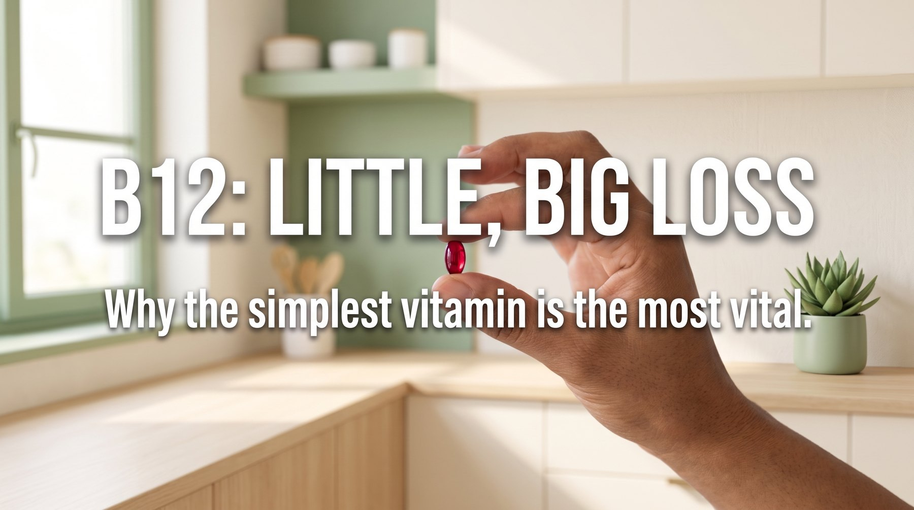

ภาพประกอบบทความ 7
assets/images/journal-07.jpg
วิตามินบี 12: วิตามินที่ร่างกายต้องการน้อยที่สุด แต่ขาดแล้วเสียหายมากที่สุด
ร่างกายคุณต้องการวิตามินบี 12 เพียงวันละ 2.4 ไมโครกรัม เล็กจนแทบมองไม่เห็น แต่ถ้าขาดไปนาน ๆ ความเสียหายอาจย้อนกลับไม่ได้ และคุณจะไม่รู้ตัวจนกว่าจะผ่านไปหลายปี เจาะลึกกลไก กลุ่มเสี่ยง และแหล่งบี 12 จากพืชที่งานวิจัยรับรอง
อ่านต่อ